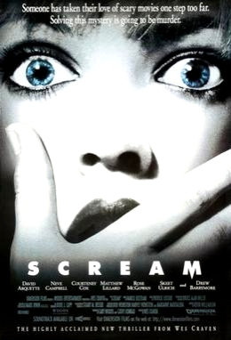

Sinopse
Uma estudante recebe uma ligação misteriosa de um assassino que já atacou naquela cidade anos antes, e a sua vida muda para sempre.
Porque gosto desse filme
O filme faz um bom uso de suspense, humor e referência às regras dos filmes de terror.
- Ritmo rápido com reviravoltas surpreendentes.
- Multiplicidade de suspeitos no mesmo espaço.
- O começo da maior franquia de slasher da história.
